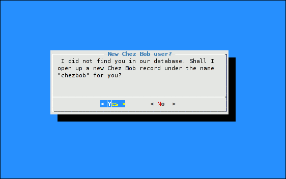
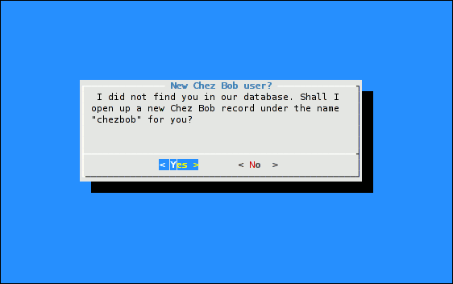
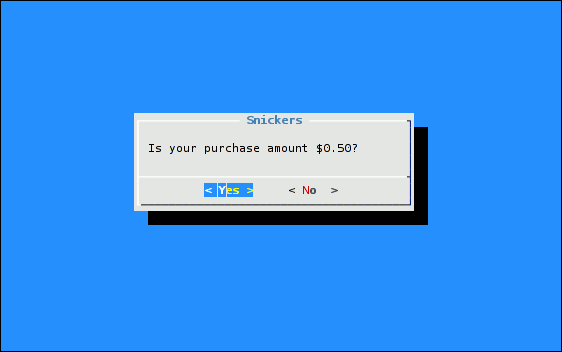
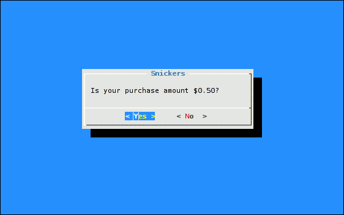
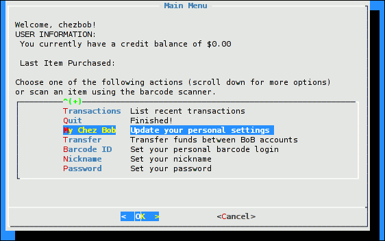
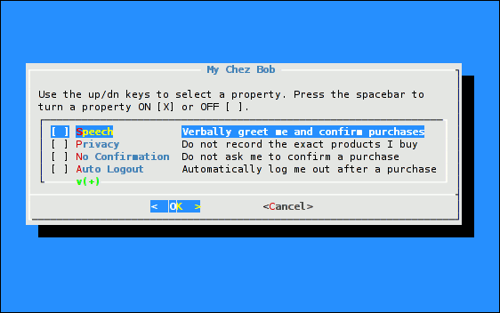

Chez Bob
Chez Bob is a department food co-op run by grad students, located in
the grad student lounge (CSE 3154). Chez Bob buys food and drinks in
bulk from Costco, and sells them to grad students (and faculty and staff
and visitors…) at just slightly above cost.
Chez Bob runs on an honor system: food and drinks made available in
the grad lounge, and people pay for them by leaving money in a box in
the grad lounge.
To make things even easier, we've created the Bank of Bob (BoB) and a
computer system for tracking purchases. Users can create an account,
deposit money into their account, purchase items with a barcode scanner,
and have the purchase price automatically deducted from their account.
The BoB computer will automatically track how much each user has left to
purchase food (or how much Bob is owed).
Getting Started
To get started with Chez Bob, you'll want to use the Chez Bob
computer, sitting on the table between the refrigerator and soda
machine.
- If you're an existing user go ahead and log into the system using
your login name (e.g., “chezbob”).
 If you're a new user, choose a new name and type it in—it can be
anything you choose. If you don't yet have an account, you'll be
prompted to create one:

If you're a new user, choose a new name and type it in—it can be
anything you choose. If you don't yet have an account, you'll be
prompted to create one:

- Once logged in, you'll be presented with a main menu that allows
you to purchase items, deposit money, edit account settings, and take
other actions.
 To purchase an item, scan it with the barcode scanner. You'll be
asked to confirm the purchase:

To purchase an item, scan it with the barcode scanner. You'll be
asked to confirm the purchase:

- To buy an item without a barcode, use the “Extra Items” menu item.
You'll be presented with a list of items available for purchase:

- To add money to your account, select the “Add Money” menu item.
Deposit money in the lockbox next to the computer, then record the
amount of money you deposited. You may also make deposits at the soda
machine (see below)—when doing so, the soda machine will automatically
count the deposit, so there is no need to manually enter the
amount.
Customizing Your Account
Log into your account and select the “My Chez Bob” option from the
main menu (you'll need to scroll down below the first screenful of menu
items). This option allows you to change various settings, such as
increasing privacy (do not record the exact items you purchased) or
disabling the confirmation before buying an item:


You may create a password for your account by selecting the
“Password” menu item. The password will then be required when logging
in to your account.
You may associate a barcode (such as the barcode from your ID card)
with your account. This will allow you to log in without typing your
username—simply scan your barcode at the login screen. To do so, select
the “Barcode ID” menu item. Logging in with a barcode does not require
entering a password, even if you have set one up.
Using the Soda Machine
One of Chez Bob's newer additions is a biometric soda machine
integrated with the Bank of Bob. In addition to dispensing soda, the
soda machine can function as a replacement for the classic Chez Bob
computer for many transactions.
Logging In
The soda machine offers several options for logging in:
- “Soda Login”: The “Soda Login” menu item on the classic
Chez Bob computer can be used to transfer a login from the Chez Bob
computer to the soda machine (assuming no one else is using the soda
machine at the time).
- On-screen keyboard: The soda machine features an on-screen
keyboard on its touchscreen.
- Barcode: If you have registered a barcode for your account
(using the Chez Bob computer), scanning this barcode at the soda
machine will log you in.
- Fingerprint: After logging in to the soda machine, you have
the option to “Learn Fingerprint”. Follow the instructions to train
the soda machine to recognize your fingerprint. After doing so, log
in simply by pressing your fingerprint to the fingerprint
scanner.
Your login at the soda machine will automatically time out. You may
also log out by pressing the coin return button on the soda machine.
Depositing Cash
While logged in to the soda machine, you may deposit bills or coins
in the soda machine. This money will be automatically credited to your
Bank of Bob account.
Making Purchases
While logged in to the soda machine, press a button for a soda or
scan a barcode with the barcode scanner on the soda machine. The item
will purchased, and the price deducted from your account.
You may also make cash-only purchases at the soda machine. Without
logging in, deposit cash. Then select an item for purchase. Your
change will be returned to you.